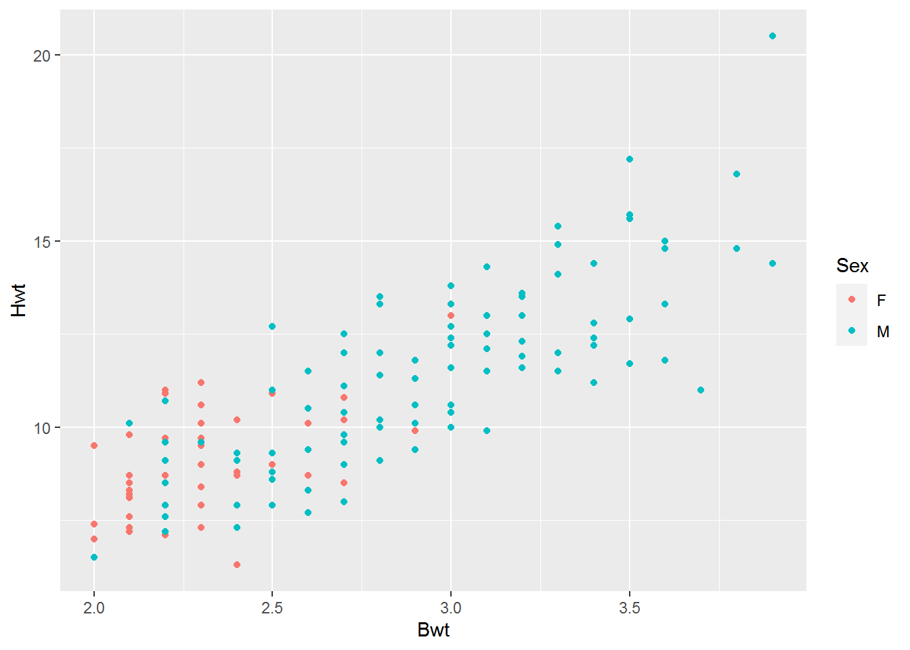
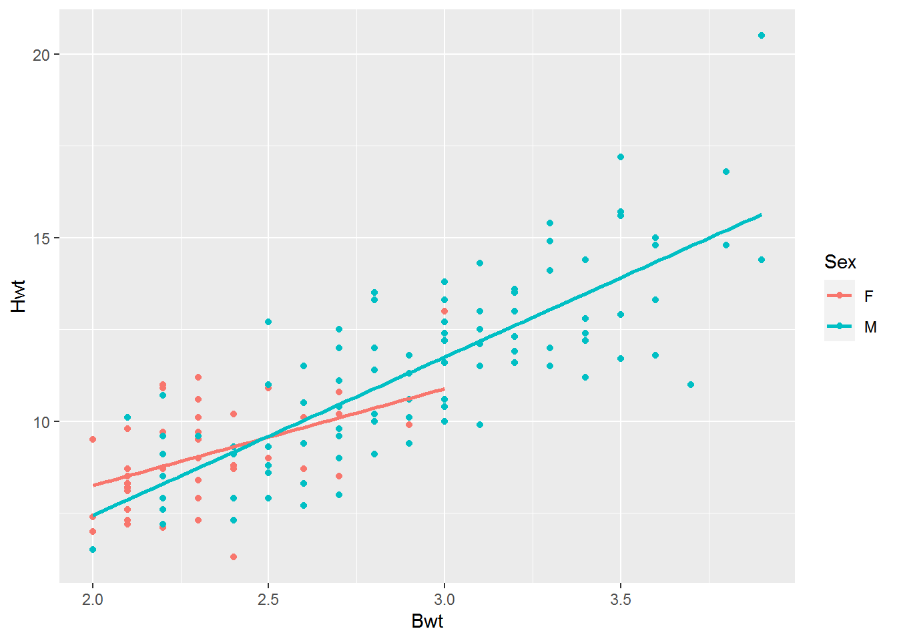

library(MASS)
library(tidyverse)## -- Attaching packages --------------------------------------- tidyverse 1.3.0 --## v ggplot2 3.3.2 v purrr 0.3.4
## v tibble 3.0.4 v dplyr 1.0.2
## v tidyr 1.1.2 v stringr 1.4.0
## v readr 1.4.0 v forcats 0.5.0## -- Conflicts ------------------------------------------ tidyverse_conflicts() --
## x dplyr::filter() masks stats::filter()
## x dplyr::lag() masks stats::lag()
## x dplyr::select() masks MASS::select()data("cats")
data=cats
View(data)
library(ggplot2)
data%>%ggplot()+
aes(x=Bwt,y=Hwt)+
geom_point(aes(col=Sex))
model <- lm(Hwt~Bwt+Sex,data = data)
summary(model)##
## Call:
## lm(formula = Hwt ~ Bwt + Sex, data = data)
##
## Residuals:
## Min 1Q Median 3Q Max
## -3.5833 -0.9700 -0.0948 1.0432 5.1016
##
## Coefficients:
## Estimate Std. Error t value Pr(>|t|)
## (Intercept) -0.4149 0.7273 -0.571 0.569
## Bwt 4.0758 0.2948 13.826 <2e-16 ***
## SexM -0.0821 0.3040 -0.270 0.788
## ---
## Signif. codes: 0 '***' 0.001 '**' 0.01 '*' 0.05 '.' 0.1 ' ' 1
##
## Residual standard error: 1.457 on 141 degrees of freedom
## Multiple R-squared: 0.6468, Adjusted R-squared: 0.6418
## F-statistic: 129.1 on 2 and 141 DF, p-value: < 2.2e-16data%>%ggplot()+
aes(x=Bwt,y=Hwt)+
geom_point(aes(col=Sex))+
geom_smooth(method = "lm",se=0,aes(col=Sex))## `geom_smooth()` using formula 'y ~ x'